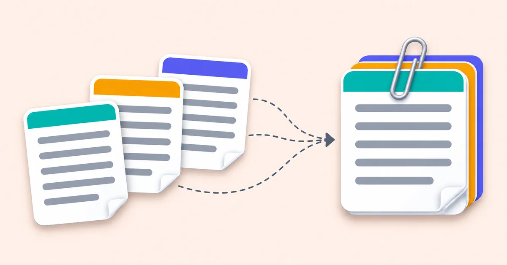
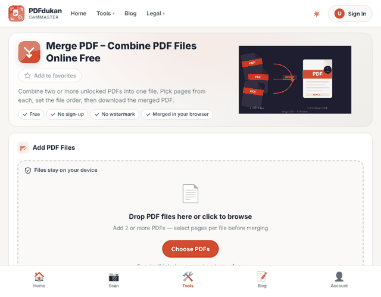
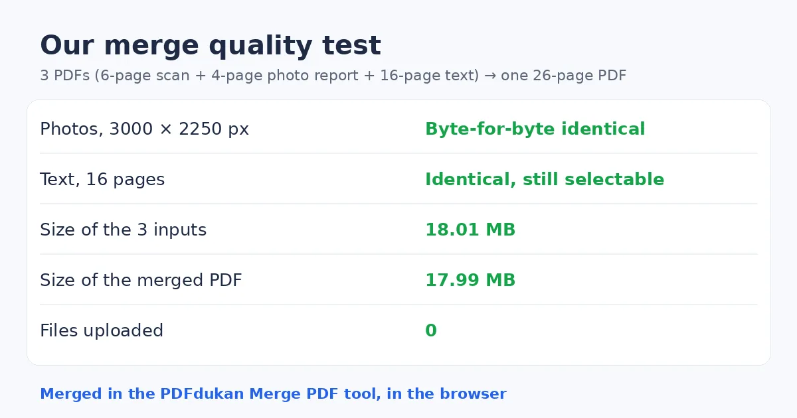

How to Merge PDF Without Losing Quality (Tested)
To merge PDF without losing quality, use a tool that copies pages as they are instead of re-rendering or recompressing them. Keep your original files, check the merged result, and compress it as a separate step only if it is too large.
Combine files with the free Merge PDF tool. It runs in your browser.

How to merge PDF without losing quality, step by step
A lossless merge takes four steps in the PDFdukan Merge PDF tool.
- Add two or more PDFs, starting from the original files rather than phone photos of them.
- Drag the file cards into order, or sort them by name.
- Tap page numbers to leave out pages you do not need.
- Click Merge PDFs, then open the download and check every page.

Does merging PDFs reduce quality?
Merging PDFs does not reduce quality on its own, because a proper merge copies pages without touching their images. PDFonFly lists three real causes of quality loss: low-quality source files, tools that recompress images, and pages dropped or misordered.
We tested this on our own tool. We merged a 6-page scan, a 4-page photo report and a 16-page text report into one 26-page PDF.
| Check | Result |
|---|---|
| Photos (3000 × 2250 px) | Byte-for-byte identical to the originals |
| Text of the 16-page report | Identical, still selectable |
| File size | 17.99 MB, against 18.01 MB for the three inputs |
| Time in the browser | Under one second |

What does a merged PDF keep?
A merged PDF from our tool keeps page content, text, image resolution, web links and fill-in form fields. It also adds one bookmark per source file, so readers can jump between documents.
The original bookmarks inside each file are not carried over. If two files use the same form field name, the second field gets a number added so both stay separate.
Why does a merged PDF look blurry or get too big?
A blurry merged page almost always comes from the source file or from a tool that recompresses images. Open the original on its own first. If it is already blurry there, merging did not cause the problem.
Size is a separate issue. A merged file is roughly the sum of its parts, so merge at full quality and then shrink it on purpose. Our PDF compression test shows how much each setting saves.
Frequently Asked Questions
How do I merge PDF without losing quality for free?
Use a free merger that copies pages instead of re-rendering them, such as a browser-based tool. Start from the original files. Check the merged file before you send it.
Will merging make my PDF file bigger?
Merging makes one file about as large as all the inputs combined. Our 26-page test file was 17.99 MB, close to the 18.01 MB total. Compress it afterwards if a portal needs a smaller file.
Can I merge only some pages from each PDF?
Yes, you can pick exact pages from each PDF before merging. The PDFdukan tool lists the page numbers of every file. Tap a number to leave that page out, or use Range for entries like 1-3.
Can I merge password-protected PDFs?
Password-protected PDFs need to be unlocked before they can be merged. Remove the password first, if you have permission. Then merge and protect the result again if needed.
Are my files uploaded when I merge?
The PDFdukan Merge PDF tool processes files in your browser. In our test, the browser sent no upload requests while merging.